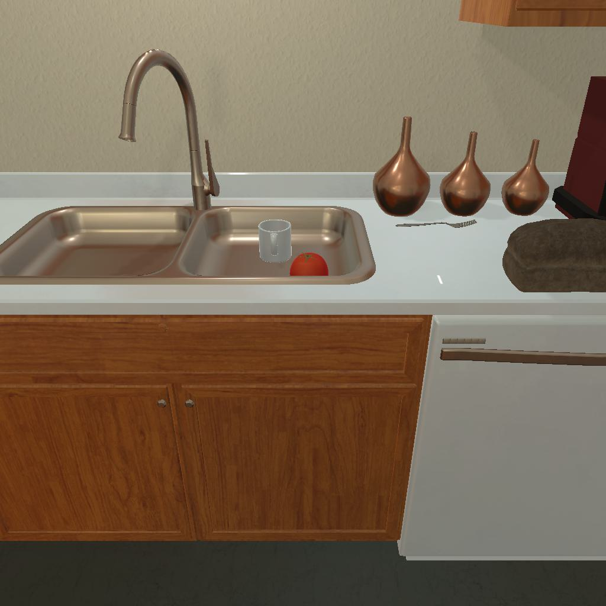

---------------------------------------------------------task: 17---------------------------------------------------------
--------------------------------------------------------------------------------------------------------------------------------------------------------------------
--------------------------------------------------------------------------------------------------------------------------------------------------------------------
Step:--------------------------------------------------------------------------11-------------------------------------------------------------------------------
----------------------------------------
VLM Prompt:
Image1:
Image2:
Image3:
**Instruction**
1. Analyze the provided images to identify all visible household objects and compare the difference between images (e.h. whether the object is opened or not and taken on hand or not), focusing on those relevant to the task description "put a cool pan in stoveburner."
2. Use the analysis of images and the task hint "The agent must find an object of the desired type, pick it up, go to a fridge, cool the object with the fridge, then find the correct location to place it, and put it down there. The agent does not need to use the fridge button or open the fridge to cool the object, and the agent just needs to do action that is "cool the object with the fridge"." to answer the question: what is the most reasonable action in the choices for the task description "put a cool pan in stoveburner"?
3. Decide and write the answer using the template: The answer is: (i): , where i is the real number. If there is no desired object in images, search every place based on **Initial Observation** to find the object. And if no one is exactly correct, choose a similar answer.
**Initial Observation**
You are in the middle of a room. Looking quickly around you, you can see cabinet (1-14), countertop (1-2), microwave (1), drawer (1-5), sink (1), sinkbasin (1), coffeemachine (1), stoveburner (1-4), toaster (1), fridge (1), diningtable (1), garbagecan (1), safe (1)
**Answer Choices**
(1): go to cabinet 1
(2): go to cabinet 3
(3): go to countertop 1
(4): go to cabinet 4
(5): go to cabinet 5
(6): go to microwave 1
(7): go to cabinet 6
(8): go to drawer 1
(9): go to drawer 2
(10): go to drawer 3
(11): go to cabinet 8
(12): go to sink 1
(13): go to sinkbasin 1
(14): go to coffeemachine 1
(15): go to cabinet 9
(16): go to cabinet 10
(17): go to drawer 4
(18): go to cabinet 11
(19): go to stoveburner 1
(20): go to stoveburner 2
(21): go to stoveburner 3
(22): go to stoveburner 4
(23): go to cabinet 12
(24): go to toaster 1
(25): go to drawer 5
(26): go to countertop 2
(27): go to fridge 1
(28): go to cabinet 13
(29): go to cabinet 14
(30): go to diningtable 1
(31): go to garbagecan 1
(32): go to safe 1
(33): open cabinet 2
(34): close cabinet 2
(35): examine cabinet 2
**Answer**
Let's think step by step by following the instructions.
----------------------------------------
----------------------------------------
Original Response:
First, we analyze the provided images:
- Image 1 and 2: We see a sink, a countertop with a tomato, a cup, and some decorative objects, and part of a dishwasher. There's no pan visible in these images.
- Image 3: We see a close-up of a wooden cabinet, but it doesn't provide any information about the contents.
Based on the task description "put a cool pan in stoveburner," we need to find a pan, cool it in the fridge, and then place it on the stoveburner. The images do not show a pan, so we must search every place based on Initial Observation to find the object.
Since we need to find a pan, which is typically stored in cabinets or drawers near the stove, the most reasonable actions from the given choices would be to check the cabinets or drawers. Among the answer choices, the cabinets and drawers near the stoveburner are not specified, but we can infer that they are likely to be cabinets 1-14 or drawers 1-5, as these are the storage places mentioned in the Initial Observation.
Given that we do not have specific information about which cabinet or drawer the pan might be in, we need to choose a similar answer that involves searching for the pan in a likely location.
The answer is: (33): open cabinet 2.
This action involves interacting with a cabinet, which is a reasonable place to start searching for a pan. If the pan is not in cabinet 2, we would continue searching the other cabinets and drawers until we find it.
----------------------------------------
----------------------------------------
>>> Refine Original VLM Response and Get Pure Action: open cabinet 2
----------------------------------------
-----------------------------------------------------------------
Running time: 14.644386053085327 seconds
Total Money: 10.261070000000002
-----------------------------------------------------------------
-----------------------------------------------------------------
Text Observation:You open the cabinet 2. The cabinet 2 is open. In it, you see a pan 1.
-----------------------------------------------------------------
UNSUCCEED